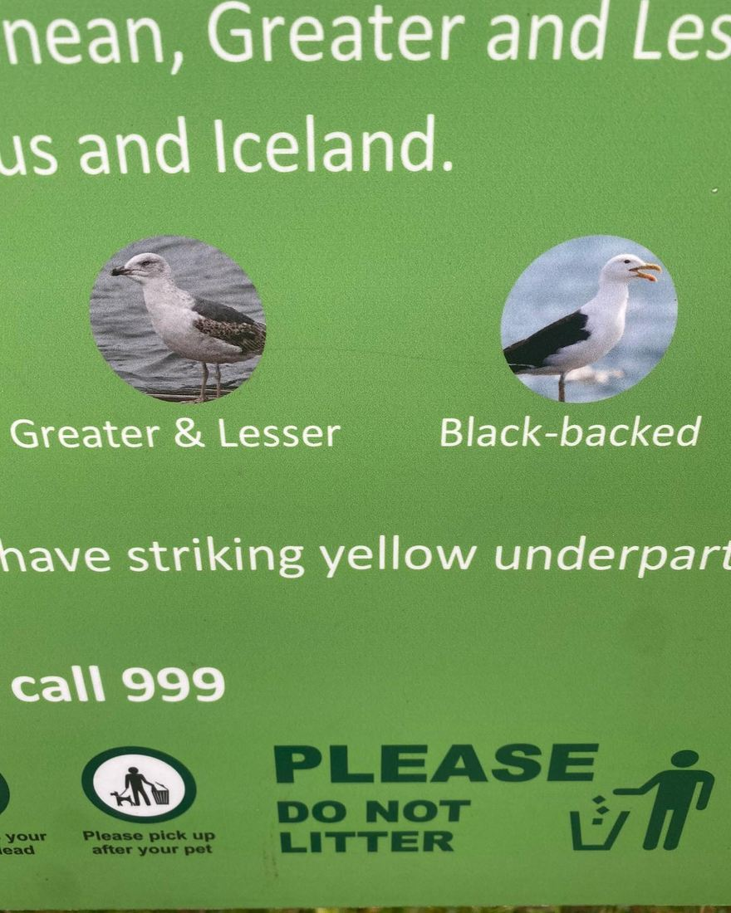
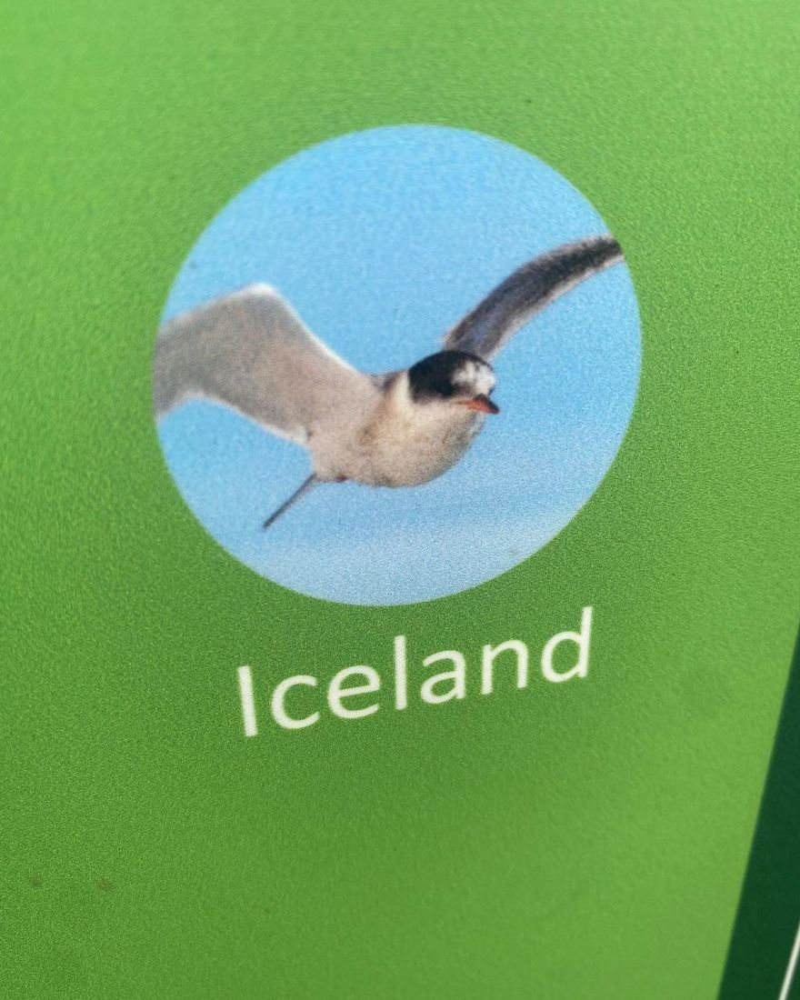
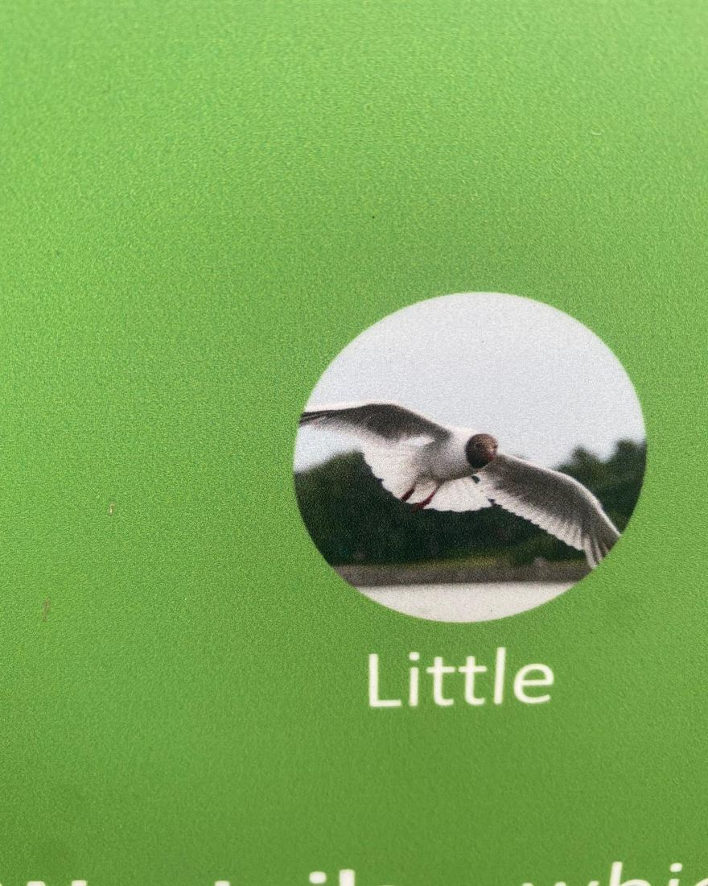
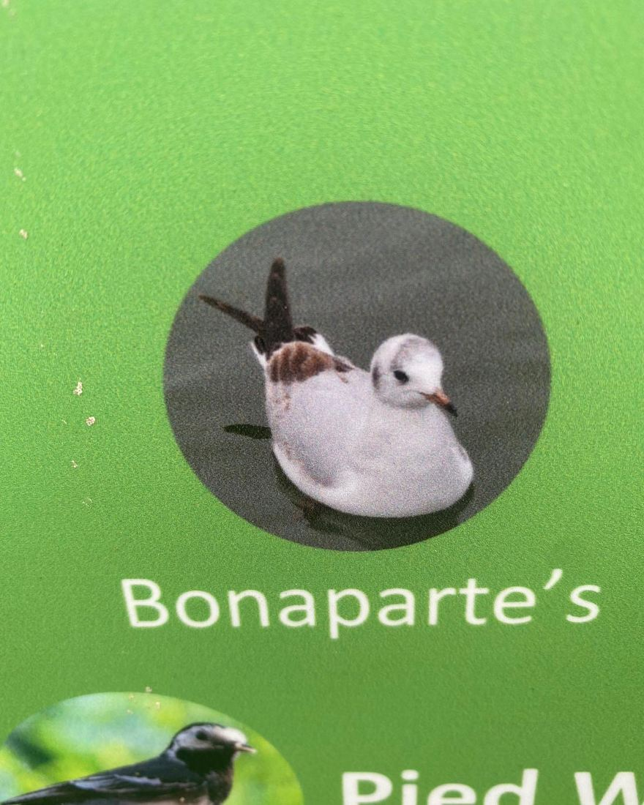

Complete chaos op een informatiebord
17 december 2021 · Ingezonden




Complete chaos op dit bord in Engeland. Kan iemand hier naar kijken? Bij ons dit doet erg veel pijn 😢




Complete chaos op dit bord in Engeland. Kan iemand hier naar kijken? Bij ons dit doet erg veel pijn 😢